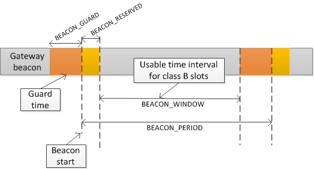

第13章 Class B下行时隙时序
13.1 定义
为了使 Class B模式能够正常运行，终端必须以信标规定的精准时刻打开接收时隙窗口。这章节定义了所需的时序操作。
两个连续的信标起始点之间的间隔称为信标周期。信标帧的传输以 BEACON_RESERVED 时间间隔的起始端对齐。每个信标都有一个保护时间间隔，在该时间间隔之内是没有 ping 时隙的。保护间隔的长度对应于允许帧在空中的最长时间。这样就能保证在保护时间之前的一个 ping 时隙内发起的下行数据帧总是有时间去完成传输而不与信标的传输发生冲突。因此用于ping时隙的时间间隔是从 BEACON_RESERVED 时间间隔的末尾节点到下一 BEACON_GUARD 时间间隔的起始节点。
 图 12 ：信标时序
| Beacon_period | 128 s |
| Beacon_reserved | 2.120 s |
| Beacon_guard | 3.000 s |
| Beacon-window | 122.880 s |
表 12 ：信标时序
信标帧在空中的时间实际上是远小于 BEACON_RESERVED 时间间隔的，目的是将来用于添加网络管理广播帧。
BEACON_WINDOW 时间间隔被划分为2^12=4096个小时段，每一段时长为 30ms，所有时段的编号从0~4095。
每个使用时隙号N的终端必须在 Beacon start 开始之后的 Ton 秒打开它的接收窗口，Ton的计算公式如下:
Ton = beacon_reserved + N * 30ms
N 称为时隙编号。
最后一个 ping 时隙时段(编号为4095)的开始时间是在 beacon start 后的 beacon_reserved + 4095 * 30 ms = 124970ms 或者下一个信标开始前的 3030ms。
13.2 时隙随机化
为了避免系统冲突或者过载问题，所以时隙编号是随机的并且在每个信标周期都会改变。
使用以下参数:
| DevAddr | 设备32位网络单播或者多播地址 |
| pingNb | 每个信标周期的ping时隙数量。必须为2的整数幂：pingNb = 2^k,1<=k<=7 <="" td=""> |
| pingPeriod | 设备唤醒接收所间隔的时隙周期，其单位是时隙数量：pingPeriod = 2^12 / pingNb |
| pingOffset | 在每个信标周期开始计算的随机偏移。值的范围为0到(pingPeriod-1) |
| beaconTime | 这个时间将会在BCNPayload中携带。前一个信标帧的时间 |
| slotLen | 一个单元ping时隙长度=30ms(就是前面所说的将ping时隙划分的时间段长度，4096段) |
在每个信标周期终端和服务器都会计算出一个新的伪随机偏移将接收时隙对齐。使用全零的固定密钥的AES加密去进行随机化：
Key = 16 x 0x00
Rand = aes128_encrypt(Key,beaconTime | DevAddr | pad16)
pingOffset = (Rand[0] + Rand[1]x256) modulo pingPeriod
信标周期所使用的时隙是:
pingOffset + N x pingPeriod with N = [0:pingNb-1]
因此节点打开接收时隙的时间是:
| First slot | Beacon_reserved + pingOffset x slotLen |
| Slot 2 | Beacon_reserved + (pingOffset + pingPeriod) x slotLen |
| Slot 3 | Beacon_reserved + (pingOffset + 2 x pingPeriod) x slotLen |
| ... | ... |
如果一个终端同时服务于单播和一个或多个多播时隙，则该计算将会在一个新的信标周期开始时执行多次。一次用于单播地址(节点网络地址)，一次用于每个多播组地址。
当一个多播ping时隙和一个单播ping时隙发生了冲突并且终端接收窗口无法进行处理的情况之下，终端应该优先监听多播时隙的数据。如果多播接收时隙之间发生了冲突，则前一个多播帧的FPending位就可以用于设置优先级处理。
随机机制可以避免单播和多播时隙的系统冲突。如果在一个信标周期内发生了冲突，则下一个信标周期就不大可能发生。